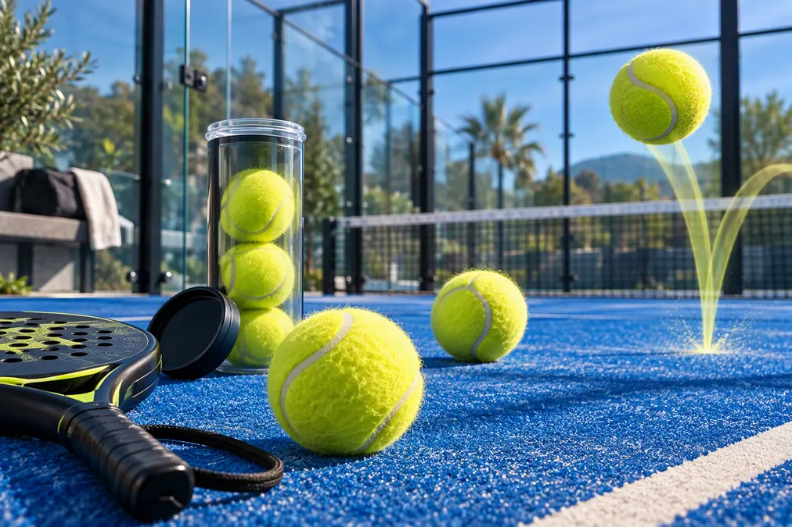

Balles de padel : bien choisir, les conserver et savoir quand les changer

On a tendance à l’oublier, mais la balle est le seul lien direct entre votre raquette et le terrain. Jouer avec des balles usées ou inadaptées peut fausser le rythme, rendre les rebonds beaucoup moins prévisibles et accentuer les vibrations ressenties dans le bras.
La bonne nouvelle, c’est qu’il n’est pas nécessaire de devenir expert en pression ou en feutre. Quelques repères simples suffisent pour choisir un tube cohérent avec votre niveau et savoir quand il est temps de le remplacer.
1. Balle de padel et balle de tennis : quelles différences ?
Les deux balles ont une apparence proche, mais elles ne sont pas interchangeables par défaut. Une balle destinée au padel doit respecter les caractéristiques prévues par le règlement de la Fédération Internationale de Padel. La pression et le rebond recherchés permettent notamment de conserver un jeu compatible avec les dimensions de la piste et l'utilisation des vitres.
Une balle de tennis usagée peut sembler pratique pour débuter, mais son comportement devient difficile à prévoir : rebond irrégulier, feutre dégradé et perte de pression. Pour apprendre les trajectoires après vitre et comparer sa progression, mieux vaut utiliser un tube de balles de padel dans un état homogène.
2. Ce que prévoit le règlement officiel
Le règlement FIP 2026 décrit les spécifications techniques de la balle et distingue les balles standards des balles destinées à la haute altitude. Pour une compétition officielle FIP, les modèles utilisés doivent respecter les caractéristiques techniques et appartenir aux balles approuvées. La liste en ligne de la FIP prévaut en cas de divergence avec une version imprimée.
Publicité responsive intégrée
3. Balle standard ou balle rapide ?
Balle standard
Elle convient à la majorité des joueurs loisirs et facilite des échanges plus construits. Elle est souvent préférable pour l'apprentissage, lorsque la régularité et le placement comptent davantage que la vitesse pure.
Balle plus vive ou pressurisée
Elle peut rendre le jeu plus rapide et faire sortir davantage la balle après la vitre ou sur les smashs. Elle demande aussi plus de contrôle. Dans un groupe hétérogène, une balle trop vive peut raccourcir inutilement les points.
Balle de haute altitude
La pression atmosphérique modifie le comportement de la balle. La FIP prévoit une catégorie spécifique pour la haute altitude. Pour un séjour ou un tournoi en altitude, utilisez le modèle indiqué par l'organisateur plutôt que de choisir seulement sur une étiquette « rapide ».
4. Comment choisir selon son niveau ?
- Découverte : privilégiez une balle régulière et pas excessivement rapide afin d'apprendre le placement et les rebonds.
- Intermédiaire : choisissez selon le style du groupe. Une balle standard favorise la construction ; une balle plus vive accélère les transitions.
- Avancé : recherchez surtout une réponse constante et adaptée aux conditions de la piste.
- Compétition : utilisez la référence imposée ou autorisée par l'épreuve.
5. Température, humidité et altitude
Le froid tend à rendre la balle moins vive, tandis que la chaleur peut accélérer son comportement. L'humidité charge le feutre et ralentit la balle. Ces effets varient avec le modèle et l'état du tube. Avant une partie importante, prévoyez un tube adapté et laissez les joueurs tester quelques échanges plutôt que de conclure après le premier rebond.
Par forte chaleur, adaptez aussi l'intensité de la pratique, recherchez un environnement plus frais et hydratez-vous régulièrement. L'Assurance Maladie recommande de réduire ou reporter l'effort lorsque les conditions chaudes et humides augmentent les risques.
6. Quand changer ses balles ?
Il n'existe pas de durée universelle valable pour tous. Le nombre de parties dépend du modèle, de la température, du niveau de jeu, de la fréquence des smashs et de la manière dont le tube est conservé.
- le rebond devient nettement plus bas ou irrégulier ;
- les quatre joueurs doivent forcer davantage pour obtenir la même longueur ;
- le feutre est très usé, détaché ou humide ;
- les balles d'un même tube ne se comportent plus de façon homogène ;
- la partie perd en rythme malgré des conditions habituelles.
7. Pressuriseur : utile ou gadget ?
Un pressuriseur peut ralentir la perte de pression entre deux utilisations. Il ne répare toutefois ni le feutre abîmé ni une balle déformée. Son intérêt est plus marqué pour les joueurs réguliers qui réutilisent rapidement le même tube. Respectez la notice et ne dépassez pas la pression recommandée par le fabricant.
8. Bien conserver un tube ouvert
- remettez les balles dans leur tube après la partie ;
- gardez-les dans un endroit sec, tempéré et à l'abri du soleil ;
- évitez le coffre très chaud d'une voiture ;
- ne mélangez pas des tubes d'âges très différents ;
- séchez le feutre humide à l'air libre avant rangement.
9. Tableau de choix rapide
| Situation | Choix conseillé | Pourquoi |
|---|---|---|
| Premières parties | Balle standard et régulière | Contrôle et apprentissage des trajectoires |
| Groupe intermédiaire | Standard ou vive selon le rythme recherché | Équilibre entre construction et vitesse |
| Froid | Modèle un peu plus dynamique | Compense partiellement une balle moins vive |
| Chaleur | Modèle standard | Évite d'accélérer excessivement le jeu |
| Compétition | Référence de l'organisateur | Conformité au règlement de l'épreuve |
| Haute altitude | Balle prévue pour l'altitude | Comportement adapté à la pression atmosphérique |
10. Questions fréquentes
Peut-on jouer avec des balles de tennis ?
Pour un dépannage informel, la partie reste possible, mais le comportement ne sera pas nécessairement celui attendu au padel. Pour progresser et comparer ses sensations, utilisez des balles conçues pour le padel.
Faut-il ouvrir un tube neuf à chaque partie ?
Non pour une pratique loisir si les balles restent homogènes et suffisamment vives. En compétition, suivez les règles et les changements prévus par l'organisation.
Une balle chère dure-t-elle toujours plus longtemps ?
Non. Le prix ne garantit pas à lui seul la longévité. La pression, le feutre, les conditions et la conservation comptent aussi.
Nos recommandations de balles officielles
Optez pour des boîtes de qualité supérieure (Head Padel Pro ou Bullpadel) pour une durabilité et un rebond constants.